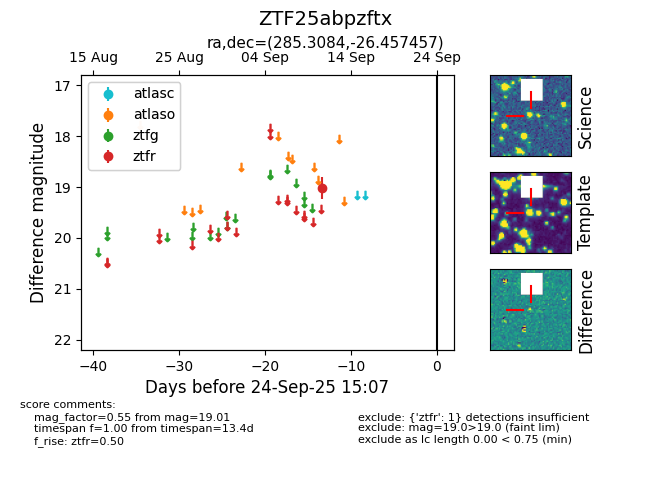

FINK: ZTF25abpzftx
Lasair: ZTF25abpzftx
ALeRCE: ZTF25abpzftx
ZTF25abpzftx (ztf,fink)
equatorial (ra, dec) = (285.3084,-26.45746)
galactic (l, b) = (9.9642,-13.72140)

last ztfr=19.01
1 ztfr detections